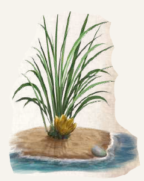

Neckerkraut erinnert an Schnittlauch, doch im Gegensatz dazu wächst es in der Nähe des Meeres, bevorzugt auf sandigem Boden. Es ist ein bewährtes Mittel gegen die Efferd- und Kerkersieche.

Suchschwierigkeit: -1
Bestimmungsschwierigkeit: 0
Anwendungen: 3/4/5/6/7/8
Wirkung:
Roh:
Berührung: keine
Einatmung: keine
Verzehr: Die Einnahme einer Anwendung Neckerkraut unterbricht die Efferd- oder Kerkersieche für einen Tag.
Die Einnahme von frischem Neckerkraut verhindert zudem für eine Woche eine Erkrankung an beiden Krankheiten.
Eine Erhöhung der Dosis hat keine Auswirkungen.
Verarbeitet: noch keine Rezepte bekannt
Preis: 3 / 3,5 Silbertaler
Rezepte:
noch keine bekannt
Haltbarkeit:
Roh: siehe Haltbarmachung